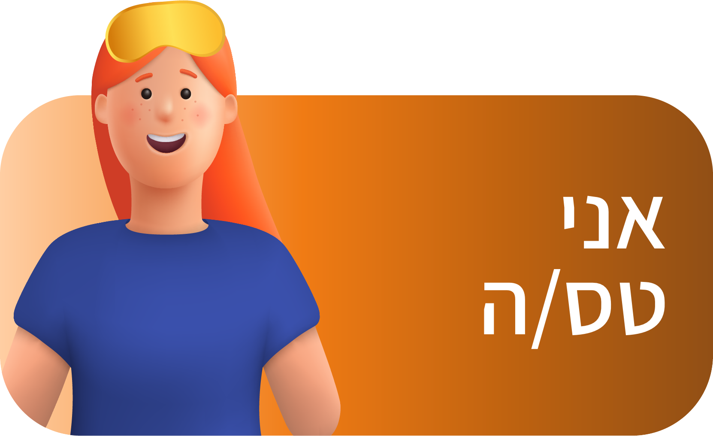
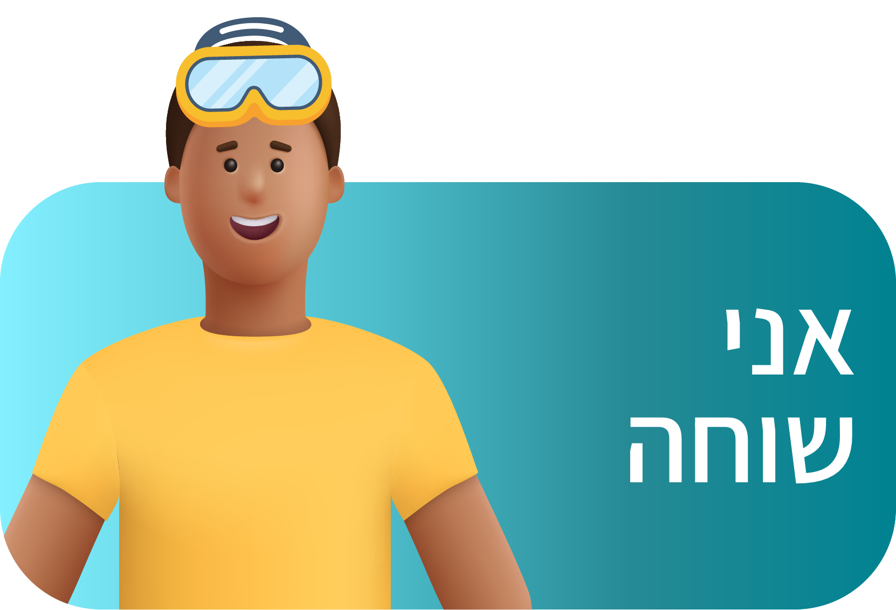
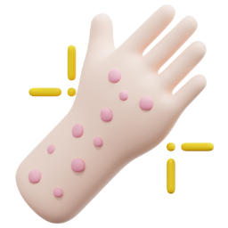
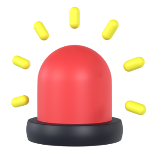
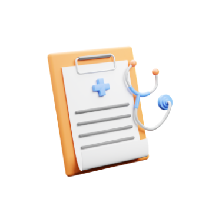
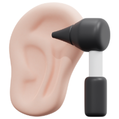
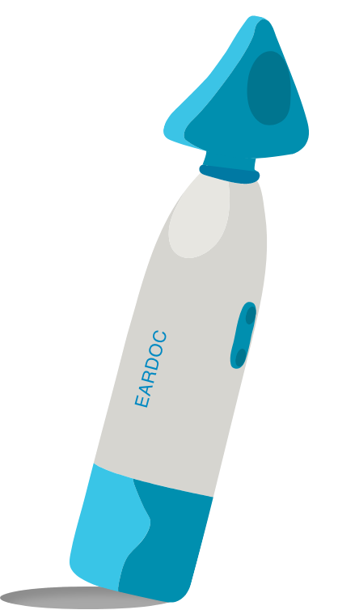

-
אתר הדרכה אירדוק
זהו אתר הלמידה של המכשיר אירדוק- כאן תוכלו ללמוד מהו האירדוק, איך הוא עובד ולאחר שתבחרו מי אתם.ן, נתאים את המידע על הוראות השימוש במיוחד בשבילכם.ן
-
בשביל שנוכל להתאים לך את ההדרכה באופן אישי, בחר/י את האפשרות המתאימה לך
-
-
-

-

-
המלצות מהעולם
למי אסור להשתמש באירזוק?

אלרגיות לחומרים
מטופלים ומטופלות עם אלרגיות ידועות ללטקס או סיליקון, חומרים העלולים להימצא במכשיר האירדוק, צריכים להימנע משימוש בו כדי למנוע תגובות אלרגיות.

למי שעם מצבים אוטולוגים חמורים
מטופלים ומטופלות עם מצבים אוטולוגיים חמורים או תסמינים הדורשים התערבות רפואית או כירורגית לא צריכים להשתמש באירדוק כתחליף לטיפול מקצועי.

ניתוח או טראומה באוזן
מטופלים ומטופלות שעברו ניתוח אוזן צריכים להתייעץ עם הרופא המטפל שלהם לפני השימוש באירדוק, מכיוון שהשימוש בו עלול להיות לא מתאים או מזיק בתהליך הריפוי.

נקבים בעור התוף
מטופלים ומטופלות עם נקבים או חשד לחורים בתופית האוזן לא צריכים להשתמש באירדוק, מכיוון שהרטטים עלולים לגרום לגירוי נוסף או לפגיעה באוזן.
שאלות נפוצות על מכשיר האירדוק
ניתן להשתמש באירדוק עד 3 פעמים ביום
כאשר כל טיפול נמשך 3-5 דקות לכל אוזן. חשוב לא לחרוג מהמלצות שימוש אלו.
כן, אירדוק מתאים לילדים אך יש להשתמש בו בהשגחת מבוגר.
הקפידו תמיד על הנחיות הבטיחות והתייעצו עם רופא ילדים במקרה של ספק.
אירדוק נועד להקל על אי נוחות הקשורות למצבים כמו דלקת אוזן תיכונה, גודש באוזניים וליקוי בתפקוד חצוצרה האוסטאכיוס.
ייתכן שהוא לא יהיה יעיל לכל בעיות האוזניים, ומשתמשים מומלצים להתייעץ עם אנשי מקצוע רפואיים לצורך אבחון וטיפול מתאימים.
שיתוף האירדוק אפשרי במידת הצורך, אך חובה לנקות ולחטא היטב את המכשיר בין משתמשים שונים כדי למנוע הדבקה הדדית.
אם אתם חווים אי נוחות, הפסיקו את השימוש במכשיר באופן מיידי ונסו לכוונן את עוצמת הרטט. התייעצו עם איש מקצוע רפואי אם האי נוחות נמשכת.
1. החליפו את הסוללות AA.
2. ודאו שהסוללה מותקנת בצורה נכונה.
3. בדלקו שלחצן ההדלקה של המכשיר פועל כראוי.
2. ודאו שהסוללה מותקנת בצורה נכונה.
3. בדלקו שלחצן ההדלקה של המכשיר פועל כראוי.
1. הגבירו את עוצמת הרטט בהדרגה עד שתמצאו את הרמה הרצויה באמצעות כפתור ההדלקה.
2. בדקו שהקצה הסיליקון מחובר כראוי ותקין.
3. וודאו שהמכשיר אינו חסום או מוחזק בצורה לא נכונה.
4. החליפו את הסוללות AA של המכשיר.
2. בדקו שהקצה הסיליקון מחובר כראוי ותקין.
3. וודאו שהמכשיר אינו חסום או מוחזק בצורה לא נכונה.
4. החליפו את הסוללות AA של המכשיר.
1. הפסיקו את השימוש באופן מיידי אם המכשיר מתחמם יתר על המידה בצורה לא נוחה.
2. תנו למכשיר להתקרר לפני שתבדקו אותו לאיתור סימני תקלה או נזק.
3. צרו קשר עם היצרן אם החימום ממשיך.
2. תנו למכשיר להתקרר לפני שתבדקו אותו לאיתור סימני תקלה או נזק.
3. צרו קשר עם היצרן אם החימום ממשיך.
זמזום קל הוא תקין, אך אם המכשיר מפיק רעש חריג או חזק, הפסיקו את השימוש ובדקו האם יש רכיבים רופפים או פגומים
תנו למכשיר להתקרר לפני שתבדקו אותו לאיתור סימני תקלה או נזק.
התייעצו עם היצרן או עם טכנאי מקצועי אם בעיית הרעש נמשכת.
תנו למכשיר להתקרר לפני שתבדקו אותו לאיתור סימני תקלה או נזק.
התייעצו עם היצרן או עם טכנאי מקצועי אם בעיית הרעש נמשכת.
